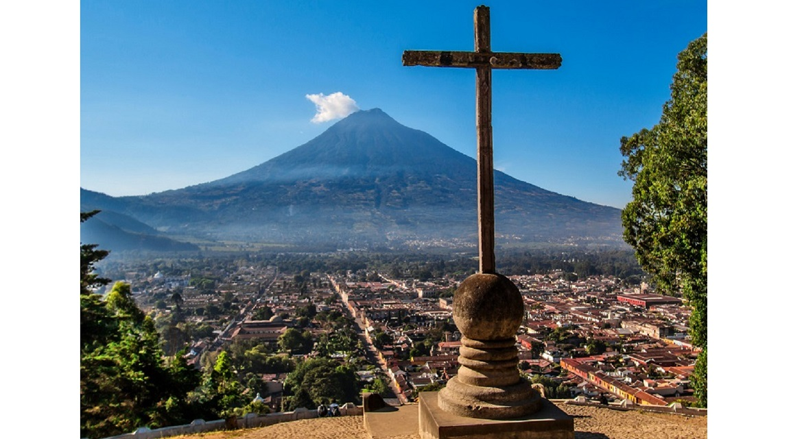
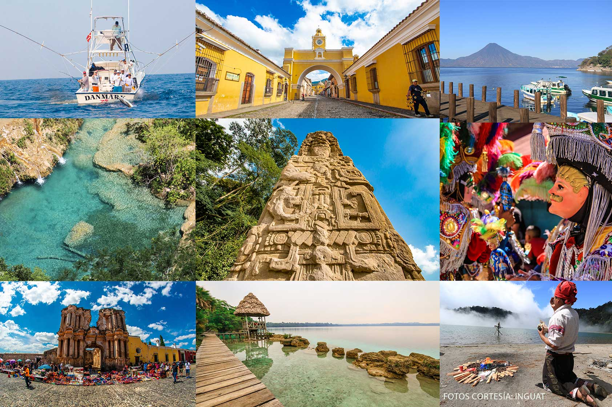

Antigua Guatemala
Excursiones y tours
por Guatemala
Principales destinos

¿Por qué elegirnos?
- Las mejores actividades garantizadas
- Guías locales especializados
- Pagos 100% seguros
Paquetes turísticos
| Destino | Duración | Incluye | Precio por persona |
|---|---|---|---|
| Antigua Guatemala | 2 días | Hotel, city tour, guía | desde $150 |
| Lago de Atitlán | 3 días | Hotel, lancha, tour | desde $180 |
| Cenotes de Candelaria | 1 día | Transporte, guía, equipo | desde $65 |
| Esquipulas | 2 días | Hotel, traslados, visita | desde $120 |
| Sumpango (Festival) | 1 día | Transporte, entrada | desde $40 |
| Tikal | 2 días | Hotel, entradas, guía | desde $220 |